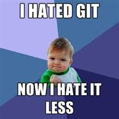

Why git?
Because it won
Because we hate it less than the other things

Limited Workflow Examples
Why not just cover all the commands?
Because this:
Git manual page
Git gives you multiple ways to solve the same problems
Our Objectives
- To not overwhelm beginners
- To give you one clear path to start using git rather than just memorizing a huge list of commands
- To give an example of a real-world workflow
Our Tools
-
Github (our starting point)
-
Command-Line
-
Text Editor
Configuration
git config --global -l
git config --global user.name "John Doe"
git config --global user.email "johndoe@example.com"
git config --global push.default current
git config --global merge.defaultToUpstream true
SSH Key Configuration
bash -c "$(curl -fsSL http://bit.ly/pcs-git)"
This copies something for you (as if you had typed ⌘C) that
will allow you to magically access GitHub repositories without passwords.
We'll paste that into the GitHub SSH keys with ⌘V.
A Solo Workflow
- create a new Github repo
- clone the repo from github to our machine
- do some work
- add files to track
- commit changes and write a commit message
- Push our changes up to Github
- Repeat steps 3-6
A Solo Workflow (including commands)
- create a new Github repo
- clone the repo from github to our machine
git clone git@github.com:user/repository.git
- do some work
- add files to track:
git add index.html
- commit changes and write a commit message:
git commit -m "make a fancy webpage"
- Push our changes up to Github
git push
- Repeat steps 3-6
Challenge
Following the steps from the previous slide:
- Create an index.html file and put some code in it
- Get the new file up on github
- When you are done and have achieved victory, say "woot!"
A Collaborative Workflow: Part 1
- create a new Github repo
- add some collaborators (admin only)
- clone the repo from github to our machine
git clone git@github.com:user/repository.git
- Make a working/feature branch:
git checkout -b branchname
- do some work
A Collaborative Workflow: Part 2
- add files to track:
git add fileName.html
- commit changes and write a commit message:
git commit -m "make a fancy webpage"
- Push our changes up to Github
git push
- do a pull request
- merge the pull request (admin only)
Challenge
Following the steps from the livious slides:
- Get into groups of 3
- Elect an admin
- The admin will make a repo on github and add collaborators
- each person in the group will work in the own branch named with their own name
- each person will make an html file named with their own name
- work in your own branch and then get everything up on github
- everyone does a pull request, then ONLY the admin merges
- lastly, do a git pull to update your local master branch
- When you are done and have achieved victory, say "woot!"